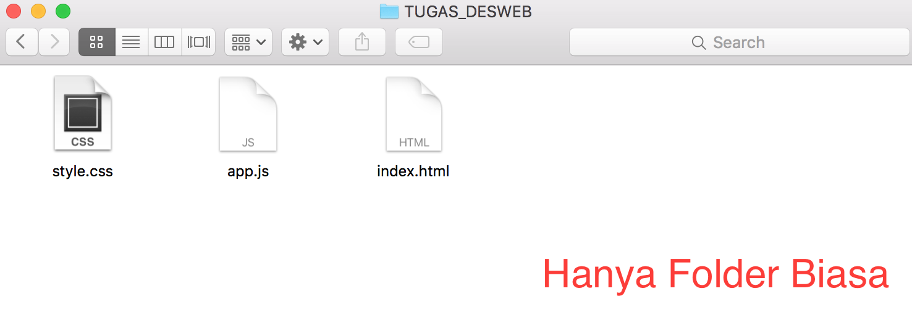
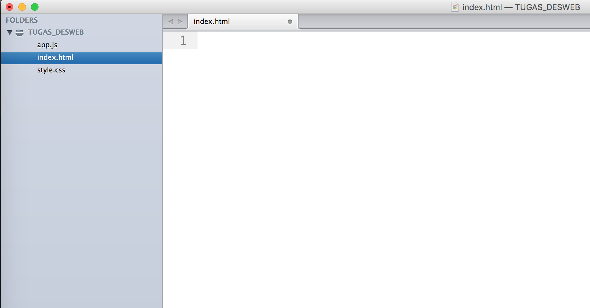
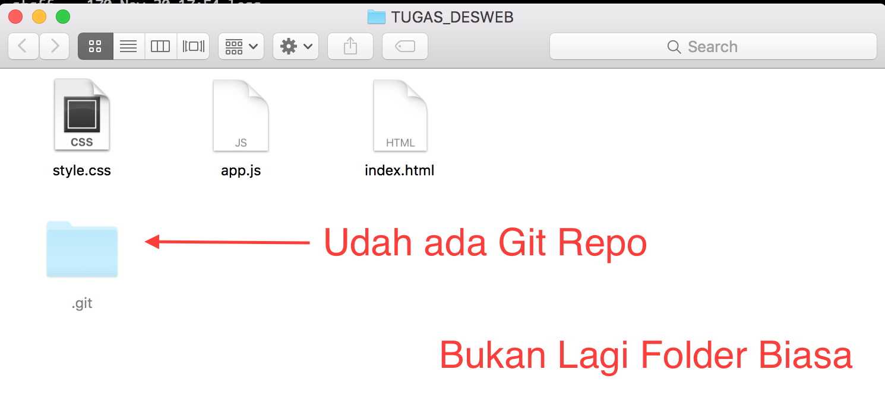
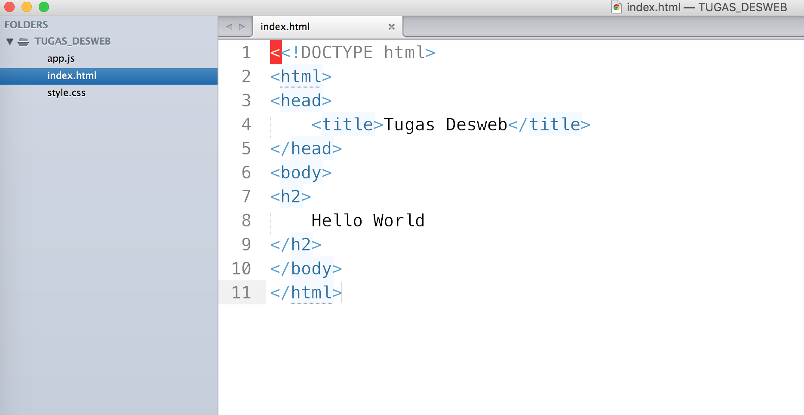
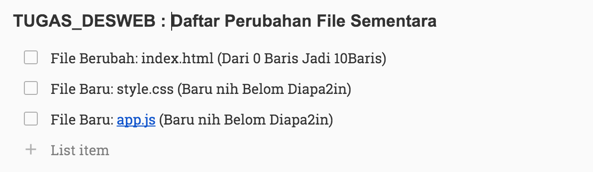
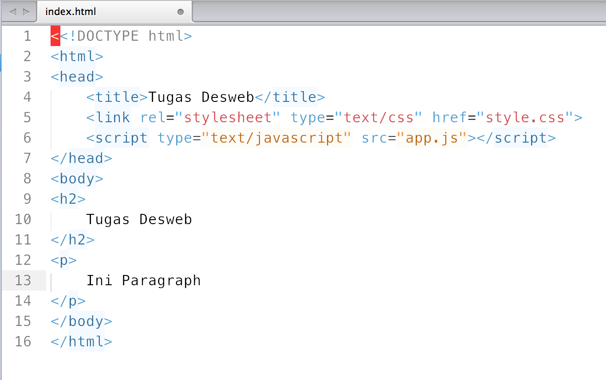
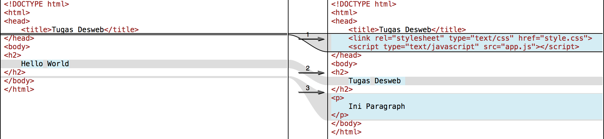

Cara Kerja Git : Versioning
Kita mulai dari bagian Versioning (mengontrol perubahan file). Ok, sekarang ceritanya kita punya satu folder TUGAS_DESWEB berisi file website statis (HTML, CSS, JS). Semua file ini masih kosong melompong.
 Folder berisi file HTML, CSS, dan JS  File index.html masih kosong.Folder di gambar di atas hanyalah folder biasa. Kita akan sulap folder tersebut supaya semua perubahan-perubahan dari tiap file bisa di monitor. Cuss, pasang git di folder TUGAS_DESWEB.
 Git sudah dipasang di folder TUGAS_DESWEBSekarang, semua perubahan yang kamu buat di semua file di folder TUGAS_DESWEB bakal tercatat di database Git. Itu di folder '.git' itu. Semuanya bakal dicatat disitu.
Lanjut, kita coba edit file 'index.html' yang tadinya kosong jadi gini.
 File index.html berubah!
Saat kamu klik tombol save di text editor kesayanganmu,
Git bakal tau kalau file index.html itu berubah, yang tadinya kosong, sekarang sudah ada isinya.
Perubahan ini dicatet di perubahan sementara dulu sama Git, belum disimpen sebagai perubahan final database dia.
Kenapa? Karena kamu belum bilang ke Git kalau kamu udah selesai sama kerjaan kamu.
Barangkali masih ada file lain yang masih mau kamu edit?
Nanti aja sekalian kalau udah selesai kerjanya atau kalau mau dilanjut nanti lagi, baru simpen deh perubahannya di database git.
Siswo: Kenapa gak setiap filenya berubah Git nya otomatis nyimpen ke database aja sih mas?Jadi gitu, Git punya dua status perubahan file. Perubahan Sementara dan Perubahan Final. Walaupun bukan berarti setiap kamu rubah file, duit kamu ngurang, tapi analoginya mirip banget. Biaya yang diperlukan buat menyimpan semua perubahan secara otomatis itu mahal.
Masnya: Otomatis disimpen kok, cuma belom final aja disimpennya..
Siswo: Belom final?
Masnya: Iya, jadi gini lo, ibarat kamu belanja banyak di supermarket. Kamu pasti masukin barang-barangnya dulu ke keranjang belanja kamu kan? Nanti bayarnya di kasir..
Siswo: Ohh... kalau setiap saya masukin barang ke keranjang terus duit saya langsung ngurang repot juga ya..
Masnya: Nah betul, wo..
Misal, kamu cuma edit baris 'Hello World' jadi 'Hello World.' cuma nambah satu karakter titik.
Terus kamu save, lalu Git otomatis simpen data perubahannya.
Padahal kamu belum selesai, masih ada banyak yang bakal dirubah.
Selesai nanti, Git bakal simpan banyak perubahan yang sebenarnya kamu ga perlukan.
Coba nanti kalau kamu mau undo perubahan filenya dan daftar perubahan filenya sejibreg. Pasti bingung.
Nah sejauh ini, di catatan perubahan sementaranya Git itu kira-kira seperti ini jadinya.
 Belom final nih! Masih sementara doang.
Sekarang mari kita bikin perubahan-perubahan sementara jadi final.
Mari kita suruh Git buat setor perubahan-perubahan tadi jadi final.
Git, finalkanlah perubahan-perubahan sementara itu.
Baik Boss.
Nah sudah kita suruh Git buat finalkan semua perubahan sementara tadi kan.
- Ehm, Boss?
- Ya, Git..kenapa? Sudah difinalkan kan itu perubahannya?
- Iya, ini mau boss. Ada catetan buat perubahan final yang ini boss?
- Oh.. iya lupa, catet ini "Selesai ngedit index.html versi awal".
- Ok siap, boss. Done.
Sekarang git sudah simpan perubahan-perubahan sementara tadi jadi perubahan final.
Dan daftar perubahannya di reset lagi jadi kosong (Kecuali kita cuma set salah satu file ke perubahan final).
Begini kira-kira daftar perubahan finalnya.
Lalu kita melanjutkan pekerjaan kita. Kita edit lagi index.html, tambah kodingan style.css, tambah kodingan app.js. Git bakal mendeteksi perubahan-perubahan ketiga file tadi ke daftar perubahan sementara. Misal file index.html sekarang jadi begini.
 Pasang style.css dan app.js. Rubah content.
Tahap-tahapnya sama persis seperti yang sudah dijelaskan sebelumnya.
Git mendeteksi perubahan file sementara,
kita kasih tau Git supaya perubahan file sementaranya jadi final, Git nanya catetannya apa, selesai.
Sekarang coba scroll lagi ke atas, tinjau file index.html saat masih kosong.
Lalu saat kita tambahkan kode HTML ke file index.html.
Git mendeteksi dari awalnya 0 baris berubah jadi 11 baris.
Perubahan yang disimpan itu jadi seluruh baris.
Lalu saat kita edit lagi file index.html ,
perhatikan sekarang file index.html jadi punya 16 baris kode.
Apakah git menyimpan perubahan dari keseluruhan 16 baris kode?
Jawabannya, tidak. Git membandingkan file index.html
versi sekarang dengan file index.html versi lama (sebelum 16 baris).
Betul begitu, Git?
Betul Boss, begini hasil perbandingannya.
 Perbandingan perubahan file index.html versi lama dan versi baru.Git hanya menyimpan perubahan perbaris kode. Misal dari file index.html tadi yang kamu edit hanya baris ke 4-9, baris ke 12-13, dan menambah 5 baris. Maka hanya perubahan pada blok-blok baris itu saja yang dicatat oleh Git dan disimpan ke daftar perubahan baik sementara ataupun final.
Sekarang misal kamu sudah selesai mengerjakan tugas desweb ini. Tapi kamu masih penasaran karena ada fitur yang bisa ditambahkan untuk mempercantik hasil tugas kuliah desweb kamu. Masalahnya kode kamu sekarang sudah tidak ada bugs, dan semua sudah memenuhi deskripsi tugas. Kamu takut kalau kamu rubah lagi kodenya, nanti rusak dan susah mengembalikan ke versi kode yang sudah selesai sebelumnya. Kalau masih sedikit perubahannya ya tinggal Undo saja. Kalau perubahannya banyak dan sudah tidak mungkin di Undo? Gimana?
Solusinya kamu tinggal simpan perubahan final versi kode yang sudah lengkap dan aman.
Lalu kamu buat daftar perubahan final baru dengan judul lain.
Secara default, Git punya daftar perubahan final dengan judul 'Master'. Tapi kamu bisa punya banyak versi daftar perubahan final.
Untuk masalah ini kamu coba buat daftar perubahan final yang baru dengan judul 'experimental' berdasarkan daftar perubahan final versi 'Master'. Jadi perubahan-perubahan final versi 'Master' sudah termasuk di daftar perubahan final versi 'experimental'. Ini seperti membuat cabang baru.
Gambarannya seperti ini.
Kalau hasil experimen nya bagus. Tinggal gabungkan daftar perubahan final versi 'experimental' ke versi 'Master'. Kodingan hasil experimen akan muncul atau menimpa kodingan versi terakhir di daftar perubahan final versi 'Master'.
Kalau gagal? Tenang, tinggal kembali ke daftar perubahan final versi 'Master'. Git akan mengembalikan kodingan kamu ke versi terakhir yang kamu simpan di daftar perubahan final versi 'Master'.
Daftar Istilah
init
Waktu kamu mau mulai buat repository git di folder kerjaan kamu.
local repository
Database perubahan-perubahan file kodingan kamu, baik yang sementara ataupun yang final.
staging
Daftar perubahan file sementara, belum final.
commit
Daftar perubahan file sementara tadi, difinalkan.
branch
Daftar perubahan final, bisa buat banyak versi daftar.
diff
Perbandingan perubahan file versi final terakhir, dengan versi yang baru dirubah.
checkout
Kembalikan kode versi final tertentu.
Seperti itulah cara Git Versioning bekerja. Intinya Git dapat menyimpan setiap versi dari file yang sudah kamu edit. Setelah paham bagian Versioning kita lanjut ke bagian Workflow. Di bagian ini kami akan jelaskan bagaimana Git bisa digunakan untuk mengerjakan tugas kelompok.